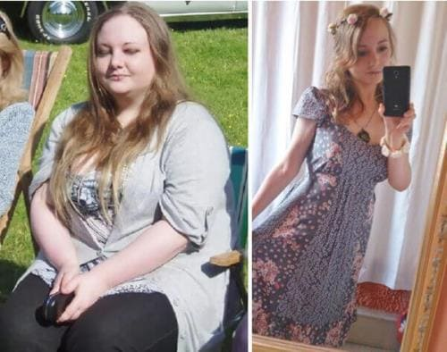

Am slăbit singură și vă voi ajuta și pe voi să slăbiți
Bună, tuturor! Îmi cer scuze, dar pur și simplu nu am avut timpul necesar pentru a răspunde la toate întrebările voastre. Dacă mă gândesc bine, toate sunt despre același subiect - cum să slăbim odată pentru totdeauna. Și bineînțeles fără să ne dăunăm sănătatea! Așa că m-am decis să scriu în această postare despre tot și să vă povestesc cum am slăbit 26 kilograme.
Aceste fotografii au fost luate exact acum o lună - impresionant, nu?
Nu am fost nicioată slabă, dar corpul meu o luase razna și ajunsesem să am pielea căzută și cu colace de
grăsime - aveam o gușă care îmi atârna până la piept ca la un curcan, aveam grăsime și celulită peste tot,
pe burtă, pe picioare și chiar și pe brațe. Am aruncat toate tricourile fără mâneci după ce am observat
asta.
M-am epuizat de plâns în fața oglinzii până să reușesc să mă adun. Mai exact să îmi adun corpul gras!
Am încercat de toate în același timp, probabil la fel ca toate celelalte fete naive ca și mine. M-am apucat
de o dietă și am început să practic sport. Mă trezeam la răsăritul soarelui, mâncam un ou crud (să nu
încercați asta niciodată!) și mă târam afară, de-abia reușind să îmi mișc picioarele. Am exclus mâncarea
prăjită, mi-am făcut abonament la sală, mi-am cumpărat ceaiuri pentru slăbit și mi-am umplut frigiderul cu
iaurt. Setul complet, ca să zic așa. Credeți că am reușit?
Din contra! M-am îngrășat și mai mult, am adăugat din senin alte 5 kg pe durata acelor săptămâni de sport intens. În total, 89 kg! La o înălțime puțin peste 1,60 cm! Ulterior specialiștii mi-au explicat că organismul se afla într-o stare de stres, așa că a început să depoziteze intens ”provizii”. Credea că vroiam să îl distrug. Am uitat gustul de pâine, uitasem ce înseamnă carnea, uitasem cum ni se topește înghețata în gură. Mâncam numai mere și beam numai apă, dar în zadar.
Pe scurt, în decursul a câteva luni am încercat diferite metode pentru slăbit, până într-o zi când m-am lăsat păgubașă.
Îmi este rușine să vorbesc despre asta, dar într-o zi m-am decis pur și simplu că îmi era sortit să mor o fată bătrână grasă înconjurată de 7 pisici. Așa că m-am dus direct la MacDonald’s, am cumpărat jumătate din meniu și am halit tot în jumătate de oră. Apoi am plâns ore în șir, îmi părea că nu se putea mai rău decât atât.
Apoi s-a întâmplat un miracol. Nu la toaleta de la MacDonald’s, ci două săptămâni mai târziu dar tot a fost
un miracol. Am văzut pe youtube un blog al unei italience care a povestit cum visase să scape de blestemul
din familia ei - toți erau grași. a ajutat-o să reușească.
Am comandat și eu . Apoi am citit multe informații pe internet despre
acest produs. S-a
dovedit că multe vedete de la Hollywood au slăbit cu acesta. Nu credeam într-o transformare miraculoasă, din
moment ce încercasem aproape toate dietele și programele existente și nici unul nu m-a ajutat, așa că aveam
dubii că
mă va ajuta.
Ei bine, nu ar fi trebuit să am niciun dubiu!
Pachetul a fost livrat rapid, în mai puțin de o săptămână. În acel timp am citit multe recenzii și informații despre și m-am asigurat că era alegerea cea mai bună. Am urmat instrucțiunile, am luat câte o capsulă de două ori pe zi, o dată dimineața și o dată seara.
Acum fiți atente. Ar fi mai bine dacă ați sta jos.
În 2 săptămâni am slăbit 13 kg! Asta înseamnă că am slăbit aproximativ un kilogram pe zi, vă vine să credeți?!
Milioane de femei din Europa și SUA au scăpat de kilogramele în plus cu ajutorul . CONFORM STATISTICILOR, 96,7% AU OBȚINUT REZULTATE IMPRESIONANTE - TOATĂ LUMEA A PIERDUT PÂNĂ LA 12-17 KG ÎN 23 DE ZILE!
O combinație unică de ingrediente face ca procesul de slăbit să fie ușor și real - rezultatele sunt impresionante!
Fesele au devenit cu aproape 10 cm mai subțiri, burta a dispărut pur și simplu - nu
îmi venea să cred. Pielea, părul - toate au devenit strălucitoare și sănătoase, coșurile de pe spate și
piept au dispărut chiar de la început.
Am început să cred că pot într-adevăr să reușesc să mă transform dintr-o femeie grasă într-o adevărată
prințesă - cântarul și oglinda nu mint!
Și credeți-mă, nu am urmat nicio dietă în acea perioadă, întreaga reușită a slăbitului am realizat-o
exclusiv cu ajutorul .
Și cea de a treia săptămână a fost un succes - am slăbit 6 kg.
Și cel mai surprinzător a fost că nu a trebuit să fac nimic - doar am luat conform instrucțiunilor și am avut grijă să nu uit să iau doza
recomandată. Chiar și cea mai leneșă persoană poate să facă asta.
În 2 săptămâni am slăbit cu 13 kg. Fără efort, restricții asupra alimentației sau exerciții fizice istovitoare. Burta mea plină de grăsime, brațele cu celulită și gușa au dispărut pentru totdeauna. Aproape că plâng de fericire în timp ce scriu asta))
După ce am urmat o dietă completă cu - adică 1 lună de zile - am slăbit 26 kg. Nu suntem conștienți de câte miracole este capabil corpul uman dacă este ajutat. Nu mai am 20 de ani, vârsta la care kilogramele se acumulează și pot fi date jos rapid.
LA MII DE OAMENI ÎNCĂ NU LE VINE SĂ CREADĂ CĂ ACUM ARĂT AȘA:
Apropo, a fost testat de Academia de Științe în 2021. Rezultatele ar fi avut efectul unei bombe, de aceea nu le-au făcut publice.
De ce? Deoarece pentru companiile farmaceutice, specialiștii, nutriționiști și clinici private, UN PRODUS CARE FUNCȚIONEAZĂ ÎNTR-ADEVĂR le face să dea faliment! Și mai ales un produs care este de asemenea și ieftin..
Acum le spun tuturor prietenilor și colegilor despre deoarece eu consider
că toată lumea ar trebui să știe despre el. Este așa de bine să fii subțire și energic vreau ca toți din jurul meu să înțeleagă câtă fericire poate aduce acest
produs. Atunci când îl comandați, vă rog să îl cumpărați numai de pe site-ul oficial al produsului.
Nu vă mai înfometați, nu vă mai istoviți la sală, fiți deștepte acum că știți ce trebuie să faceți.
Încă visați la un corp suplu? Este timpul să acționați! Scăpați imediat de grăsimea oribilă!
Voi răspunde la cele mai populare întrebări:
Apar vergeturi după o slăbire rapidă?
Nu, nu lasă vergeturi! Slăbirea, deși este destul de semnificativă, este
un
proces treptat, așa că pielea are destul timp ca să se adapteze la modificări și să își păstreze tonusul.
Ce se întâmplă cu pielea! Se strânge?
Nu! Pur și simplu revine la starea sa normală. declanșează producția de
colagen, care permite pielii să fie elastică
și tonifiată. Nu există nicio urmă de vergeturi sau celulită, credeți-mă!
Ce dietă să urmez?
Sunt împotriva tuturor dietelor, deoarece nu trebuie să ne torturăm corpul.
Este adevărat că nu trebuie să mâncăm după ora 6 p.m?
Acesta este un mit! Ar trebui să mănânci ori de câte ori îți este foame! Bineînțeles că este mai bine
să mâncăm mese mici la câteva ore - și totul va fi bine.
Am vești extraordinare. Am contactat reprezentanții și aceștia au oferit o reducere de 50% primilor 100 vizitatori ai blogului meu care fac o comandă
Visez la un corp suplu de când eram mică. Am aflat despre acum trei luni. Am ezitat să îl comand dar m-a convins mama mea. Nu este un preț mare de plătit pentru a-ți vedea visul împlinit! Acum slăbim amândouă. Ea chiar a reușit să slăbească mai mult decât mine, dar oricum rezultatele sunt uimitoare.
Bună, Teo! Am încercat și pot să îți spun acum că mi-ai salvat familia și căsnicia) Soțul meu a reînceput să mă vadă ca femeie, mă face să am încredere în mine. Viața a devenit mai ușoară pentru mine, îți mulțumesc!))
Dragă, Teo, blogul tău este minunat și tot ce recomanzi tu chiar funcționează. Și eu am încercat zeci de diete și programe de slăbit, dar rezultatele erau întotdeauna sub așteptările mele. Cântăresc 85 kg și am o înălțime de 1,63 cm. Am comandat imediat după ce am citit postarea ta. Sper că mă va ajuta să slăbesc 35 kg. Promit că voi scrie despre rezultate.
Bună, Mirela! Nu am fost singura care a slăbit cu ajutorul , de asemenea și alte prietene au slăbit, așa că să fii sigură că vei reuși și tu. Să ne împărtășești rezultatele, este foarte important pentru mine să știu care este părerea celorlalți. Sper sincer că vei reuși, succes!
Dragă, Teo! Îți mulțumesc! Am scăpat de kilogramele în plus așa de rapid și mai ales fără efort. Este un adevărat miracol, îți mulțumesc că ne-ai spus totul despre acest produs!
Am știut întotdeauna că tehnologiile moderne nu vor eșua și că se va găsi o soluție la problema privind obezitatea)) Mâine am întâlnire la un restaurant, pentru prima oară după mulți ani. Până de curând am fost eu însămi un fel de restaurant - multă grăsime și miros de carne prăjită)) Cu ajutorul am slăbit 14 kg într-o lună! Mulțumesc, Teo!
Wow! Teo, ai obținut un asemenea rezultat impresionant într-o sigură lună??? Cred că îl voi comanda și eu ! Ieri m-am urcat pe cântar - situația nu este așa de roz((
Am încercat și eu și am slăbit 34,5 kg în 6 luni!!! Nu aș fi crezut niciodată dacă nu mi s-ar fi întâmplat cu mine! Este pur și simplu uimitor! Teo, te rog să primești recunoștința mea nemărginită!
Felicitări, Alexandra! Rezultatul tău este super, nu mai am niciun dubiu după ce am văzut rezultatele tale!
Am comandat în sfârșit . Îți mulțumesc, Teo! Așa cum am promis, vă împărtășesc rezultatele! Într-o 2,5 luni am slăbit 32 kg! Ce reușită!
Wow, este într-adevăr impresionant. O prietenă de-a mea a slăbit cu 19 kg în 1,5 luni. Nici măcar mama sa nu a recunoscut-o!
Mulțumesc pentru sprijin. O nouă greutate, o nouă viață, este adevărat. Am slăbit numai 5 kg, dar scad constant în greutate - așa că sunt fericită.
Și trei prietene de-ale mele au slăbit cu ajutorul , iar ceilalți nu le mai recunoșteau deoarece ele fuseseră întotdeauna rotunjoare înainte și acum arată ca niște manechine. Și eu am comandat acest produs - pentru că nu vreau să fiu cea mai puțin atractivă din gașcă.
Teo, așa cum ai cerut, scriu despre rezultatele mele. Am slăbit 12 kg în prima lună!!! Sunt așa de bucuroasă, nici nu poți să îți imaginezi!
Bună, Elena, sunt foarte bucuroasă pentru tine, însă din câte îmi amintesc, îți doreai să slăbești 30 kg - așa că încă mai ai mult de slăbit! Succes și nu uita că sunt întotdeauna aici pentru a te susține!
Bună, Teo! Am citit povestea ta și m-am decis să comand și eu . Urma să mă întâlnesc în curând cu colegii mei de liceu, pe care nu îi mai văzusem de mult timp și ar fi fost păcat să apar așa în fața lor. Am o înălțime de 1,60 și aveam o greutate de 91 kg. Nici măcar nu îmi puteam găsi haine potrivite ...dar am reușit să slăbesc și să am mărimea 44 cu ajutorul ! Așa că la întâlnirea respectivă, am fost regina balului)) Am slăbit peste 25 kg în 2 luni, este uimitor, pur și simplu nu mai am cuvinte pentru a exprima ceea ce simt. Mulțumesc!
Consumatorul are dreptul sa notifice in scris comerciantului ca renunta la cumparare, fara penalitati si fara invocarea unui motiv, in termen de 10 zile lucratoare de la primirea produsului sau, in cazul prestarilor de servicii, de la incheierea contractului.
Dragă Teo, îți sunt foarte recunoscătoare pentru recomandare! Am citit multe lucruri despre , dar îmi era teamă și nu credeam că dă rezultate. Am comandat numai după ce am citit postarea ta. Au trecut trei luni de când am terminat dieta completă cu . Am slăbit 39 kg! Acum cântăresc 46 de kg și, așa cum ai promis, greutatea mea nu mai este oscilantă. Nu îmi mai fac griji pentru siluetă și viitor. MULȚUMESC! 